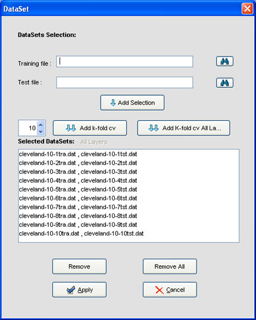
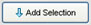
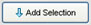

- Choose the wished DataSets from the "Select Datasets" panel on the left of the window.
- Click on the draw area.


 button near the DataSet´s name and the following dialog appears.
button near the DataSet´s name and the following dialog appears.
Initially, this dialog has all of the file. So, if you want to remove some of them, select it and then click the  button. Another way
is to remove all the files by clicking the
button. Another way
is to remove all the files by clicking the  button, and then add the files you want. To do that, you must look for the
training and test file by clicking the
button, and then add the files you want. To do that, you must look for the
training and test file by clicking the  button and, after that, click the  button.
button and, after that, click the  button.